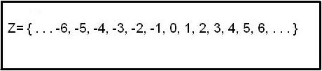

Está claro que los científicos necesitan algo más que números enteros para expresarse.
El manejo de los números es su sello de distinción.
Compañeros y compañeras, ¡hemos de recordar cómo manejarnos con las potencias!
Lectura facilitada
Los científicos necesitan números enteros y
otras operaciones matemáticas para sus cálculos.
Ahora vas a recordar las potencias.

Definición:El conjunto de los números enteros está formado por los números naturales, sus opuestos (negativos) y el cero.
Ejemplo:El conjunto de números enteros se representa con la letra Z.